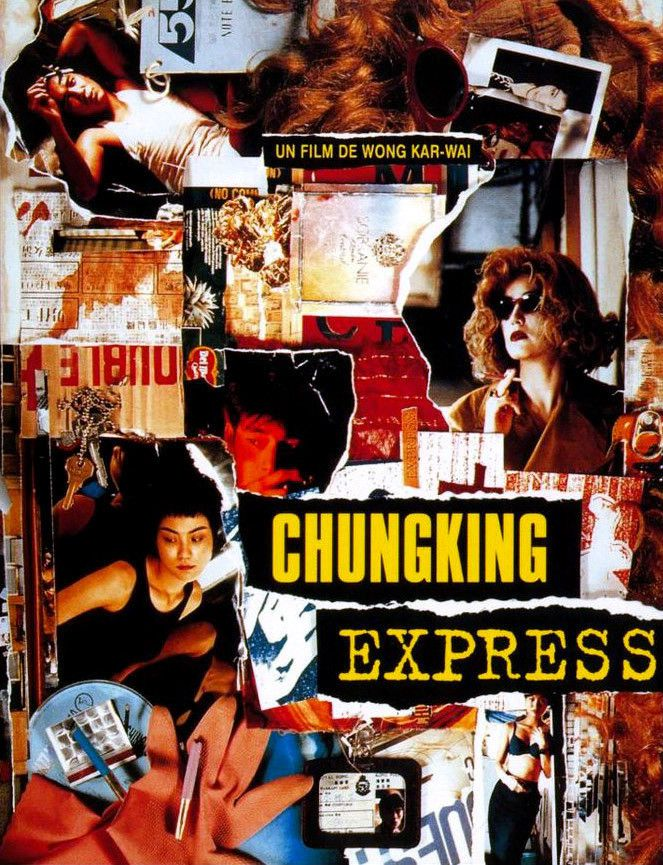
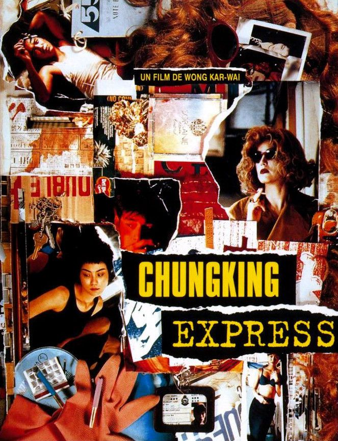

As films made in the "Hollywood" are leading the global film industry, it is easy to be exposed to American Hollywood films with limited diversity in stories and values. However, being introduced to film works from various countries and about diverse cultures can open up new views and philosophies that you have not been introduced to before. I am introducing these three films that I personally had a lot to learn different cultural values and societies: Spirited Away, Coco, and Chungking Express. The reason why I value films from diverse cultures is that they give you completely new perspectives on things. Since the cultural background of characters from the films may be very different from mine, the way they see the world in the stories are new to me. With this, I get to appreciate new values and beliefs and have an opportunity to challenge my current beliefs I have had. Additionally, the films teach you a lot about history and culture about different countries. For example, I learned about how traditional Mexican culture values the deceased through the film Coco, or how important identity plays a role in Japan through Spirited Away. Now, let's dive into each film and how they introduce diverse culture and values.